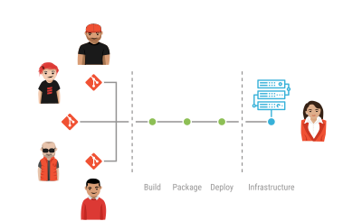
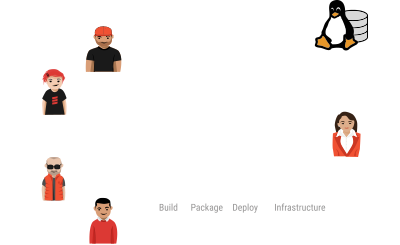
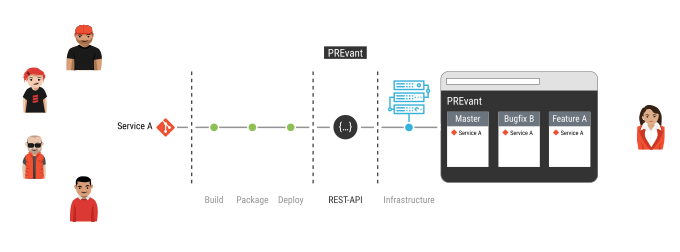
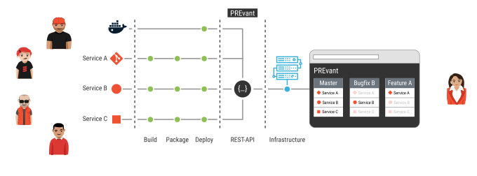

PREvant Preview Servant
Agenda
Why do we use Microservices?
- Scalable (make use of Conway's law)
- Fast deployment cycle
- Superior quality, greater flexibility, ...
At aixigo we are in the migration phase.
How did we start developing Microservices?
 

How to simplify preview deployment
and quality assurance?
PREvant in a nutshell
 

How does it work?
- Provides a RESTful API
to abstract microservice deployment - Services of multiple repository
are combined into one application - Replication is usefult for Git-flow based development
- Companions are useful for infrastructure services
It is just a Docker setup
version: "3"
services:
prevant:
image: aixigo/prevant
labels:
traefik.frontend.rule: 'PathPrefix:/,/index.html,/init.css,/app.js,/openapi.yaml,/api'
traefik.frontend.priority: -100
volumes:
- /var/run/docker.sock:/var/run/docker.sock
- ./PREvant-config.toml:/app/config.toml
traefik:
image: traefik:alpine
command: --api --docker
network_mode: "bridge"
ports:
- "80:80"
- "8080:8080"
volumes:
- /var/run/docker.sock:/var/run/docker.sock
Companions
[[companions]]
# A database for each service
[companions.mariadb]
type = 'service'
image = 'mariadb:10.3'
serviceName = '{{service.name}}-db'
env = [ 'MYSQL_DATABASE={{service.name}}', 'MYSQL_ALLOW_EMPTY_PASSWORD=yes'
# A OpenID provide for the application
[companions.openid]
type = 'application'
image = 'registry.example.com/org/openid-provider:latest'
serviceName = 'openid'
Handlebars templates to configure companions